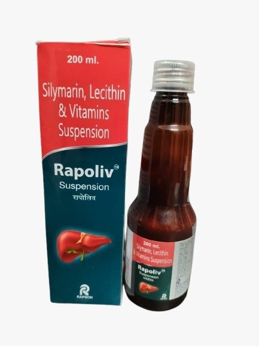

.png)
.png)
.png)
Enhances Liver Detoxification, Improves Liver Energy.
Each 5ml contains a powerful blend of hepatoprotective agents:
A potent natural antioxidant that prevents liver damage caused by free radicals and prevents hepatic lipid peroxidation.
Essential for reducing cholesterol levels and boosting overall immunity while protecting the liver and gallbladder.
Includes Benfotiamine (5mg), Niacinamide (20mg), and Vitamin B12 (1mg) to support healthy brain function and heart health.
Rapoliv provides broad coverage against various liver ailments by utilizing the synergistic effect of Silymarin and Lecithin. It increases glutathione synthesis inside liver cells to combat oxidative stress. Furthermore, it supports mental health and reduces the negative effects of alcohol on the body.
Actively increases the natural synthesis of glutathione within liver cells for superior internal cleansing.
Simultaneously protects the liver, boosts immunity through Lecithin, and supports brain function with B-vitamins.
Specifically formulated with Benfotiamine to help reduce the negative physical and neurological impacts of alcohol.
The ideal liver tonic indicated for: